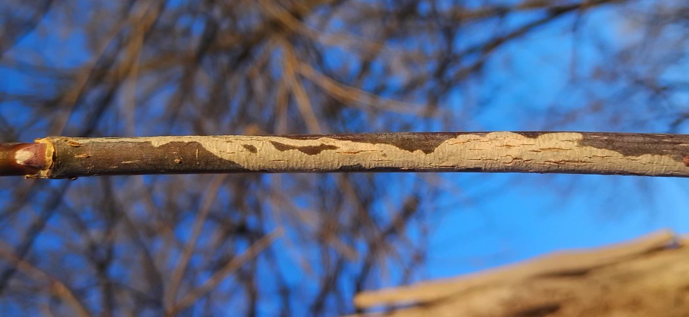
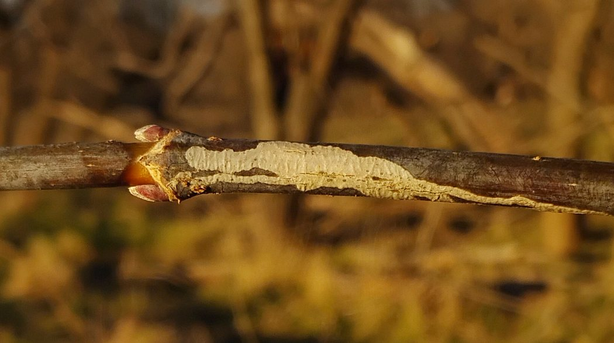
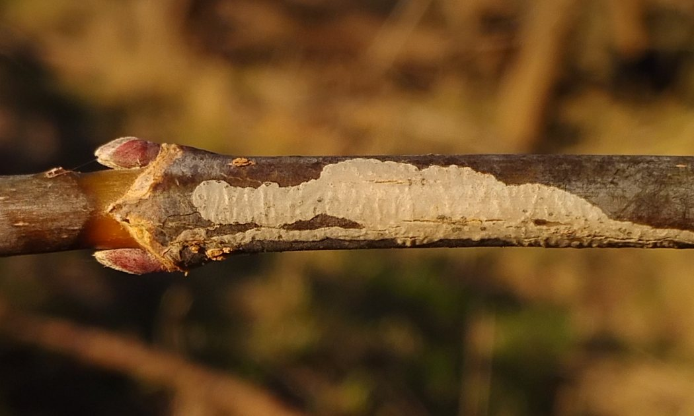
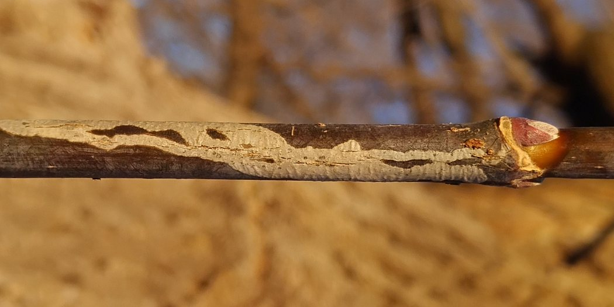

Stem miner (Lepidoptera: Gracillariidae) in Acer
| Record no.: | 0779 |
|---|---|
| Feeding guild: | Stem miner |
| Taxonomy: | Lepidoptera: Gracillariidae: Marmara sp. |
| Stages observed: | trace |
| Distribution observed: | IA |
| Hosts in Acer: | A. negundo (boxelder) |
In 2026, I found a Marmara mine on a young boxelder twig in the winter, after it had already apparently been evacuated by the larva in the previous growing season. The mine was at least a decimeter in total length and widened considerably along its length as it wound up and down the twig. It was white in color compared to the darker color of the unaffected bark. The twig was a vigorous sprout from the main trunk of the tree, about six feet above ground level.
I had been alerted to the presence of such mines in North America years ago by T. Feldman (pers. comm.), but for a long time did not find one, and had suspected they were not present in my study area...incorrect, as it turned out. The following external links on BugGuide (not my own) provide good photographic information about the life history of this species:
- Stem mine: https://www.bugguide.net/node/view/1502839
- Stem mine: https://www.bugguide.net/node/view/2245769
- Larva in mine: https://www.bugguide.net/node/view/2164978
- Larva in mine, with central frass line: https://www.bugguide.net/node/view/2163306
- Exit slit: https://www.bugguide.net/node/view/2245776
- Exit slit: https://www.bugguide.net/node/view/1784421
- Cocoon: https://www.bugguide.net/node/view/2167230
The photos in all of the BugGuide links above were taken by T. Feldman (Feldman 2018, Feldman 2020, Feldman 2022a-c, Feldman 2023a-b). Note that in the 2022 photos, the larva finished feeding, exited the mine, and pupated around August 20 and the adult emerged in the first days of September.

 Prev
Prev
{kind=link}
{kind=link}

{kind=link}

{kind=link}

- Feldman, T. 2018. Willy Duke Bluffs stem miner maybe on Acer negundo D898 2018 1 - Marmara. Contributor post on BugGuide.net. Retrieved January 25, 2026 from https://www.bugguide.net/node/view/1502839. [return to in-text citation]
- Feldman, T. 2020. Willy Duke Bluffs stem miner on Acer negundo D2042 2020 6 - Marmara. Contributor post on BugGuide.net. Retrieved January 25, 2026 from https://www.bugguide.net/node/view/1784421. [return to in-text citation]
- Feldman, T. 2022a. New Hope Bottomlands stem miner on Acer negundo D4056 Marmara 2022 5 - Marmara. Contributor post on BugGuide.net. Retrieved January 25, 2026 from https://www.bugguide.net/node/view/2163306. [return to in-text citation]
- Feldman, T. 2022b. New Hope Bottomlands stem miner on Acer negundo D4056 Marmara 2022 11 - Marmara. Contributor post on BugGuide.net. Retrieved January 25, 2026 from https://www.bugguide.net/node/view/2164978.
- Feldman, T. 2022c. New Hope Bottomlands stem miner on Acer negundo D4056 Marmara cocooon 2022 2 - Marmara. Contributor post on BugGuide.net. Retrieved January 25, 2026 from https://www.bugguide.net/node/view/2167230.
- Feldman, T. 2023a. Mason Farm stem miner Marmara on Acer negundo D4455 2023 1 - Marmara. Contributor post on BugGuide.net. Retrieved January 25, 2026 from https://www.bugguide.net/node/view/2245769. [return to in-text citation]
- Feldman, T. 2023b. Mason Farm stem miner Marmara on Acer negundo D4455 2023 4 - Marmara. Contributor post on BugGuide.net. Retrieved January 25, 2026 from https://www.bugguide.net/node/view/2245776.
Page created: January 30, 2026. Last update: none